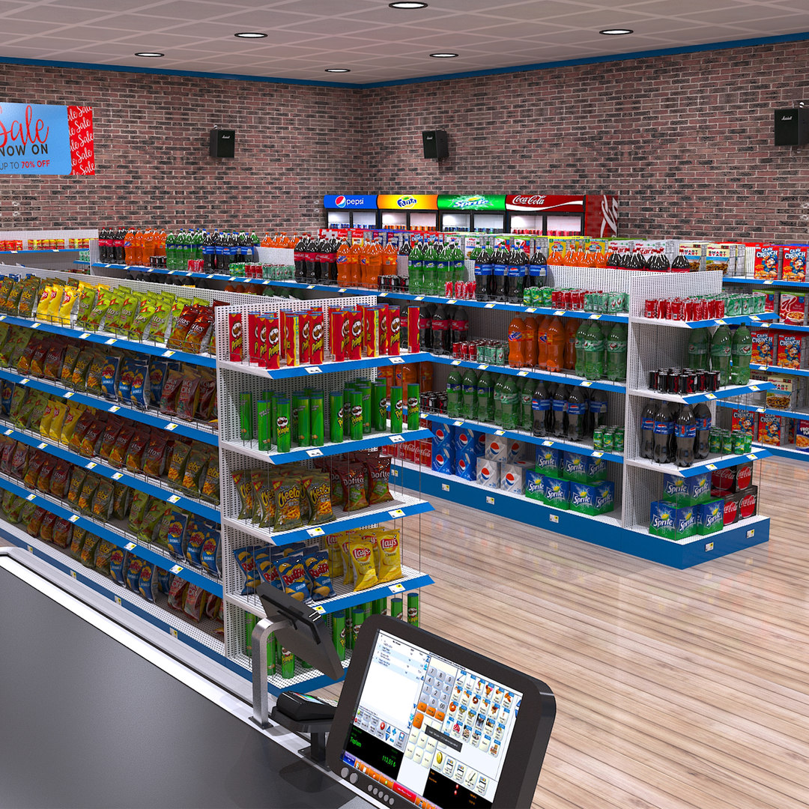
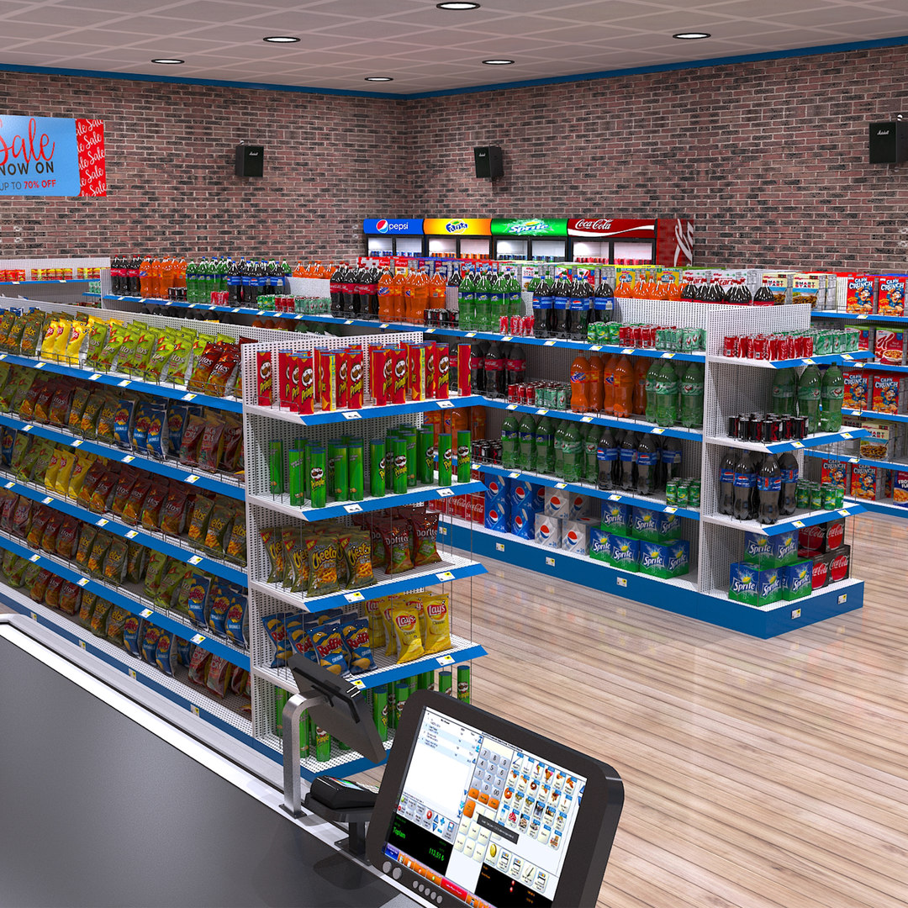

In this data analysis project, I utilized several powerful Python libraries, including scikit-learn, Seaborn, and Pandas, to explore and predict breast cancer diagnoses. Through my extensive analysis of the dataset, I was able to develop a highly accurate prediction model, which not only detected whether a tumor was malignant or benign with impressive accuracy but also uncovered important patterns and trends within the data that can inform future research and medical treatments. This project showcases my ability to leverage advanced data analysis techniques to uncover meaningful insights and drive impactful outcomes..
 

In my exploratory data analysis project, I utilized Python to dive deep into a large dataset of supermarket sales and uncover valuable insights. Through my analysis, I was able to identify trends in sales, customer behavior, and product popularity, enabling me to make data-driven recommendations for improving sales and customer satisfaction. By leveraging the power of Python libraries such as NumPy, Pandas, and Matplotlib, I was able to visualize complex data and communicate my findings clearly and effectively. This project showcases my ability to uncover hidden insights within complex data sets and leverage them to drive meaningful outcomes.
I worked with the Nashville Housing Dataset to cover the process of cleaning and preparing data for analysis using SQL queries. I discussed identifying and dealing with missing data, duplicate records, and inconsistencies in the Nashville housing data, as well as cleaning procedures such as data normalization, standardization, and transformation. I also highlighted the importance of data quality and showcased how cleaned and prepared Nashville housing data can be used for analysis using SQL queries. By the end of this project, I gained a solid understanding of how to use SQL queries to make data-driven decisions with confidence.
In this exploratory data analysis project, I focused on gaining insights into the COVID-19 dataset using SQL queries to analyze and manipulate the data. The project covered exploring the structure, sources, and limitations of the COVID-19 dataset and highlighting the importance of data quality and potential biases. Using SQL queries, I demonstrated how to extract meaningful information from the dataset and how to identify trends and patterns in the COVID-19 data. Additionally, I showcased exploratory data analysis techniques such as statistical summaries and dimensionality reduction methods to gain deeper insights into the dataset. The insights gained from the project can be used to inform public health policies and decision-making related to the COVID-19 pandemic.
I used Pandas to analyze a real-world dataset and gain insights into its patterns and trends. Starting with data cleaning and preparation, I demonstrated how to use Pandas to identify and address data quality issues, such as missing or duplicate records. Next, I showcased how to use Pandas for exploratory data analysis, including data aggregation and visualization techniques like scatter plots and line charts. Throughout the project, I used various Pandas functionalities, such as data manipulation, selection, and filtering, to uncover interesting insights and identify meaningful patterns in the dataset. The insights gained from the project can be used to inform business decisions and improve the effectiveness of the organization
My latest project is a web scraping tool for the CoinMarketCap API that I have developed using Python. As a seasoned developer with a deep interest in data analytics and automation, I have created a sophisticated tool that can extract real-time data on hundreds of cryptocurrencies, giving you valuable insights into the market. With its user-friendly design and efficient data extraction capabilities, my web scraping tool is perfect for traders, investors, and researchers who want to stay informed and make data-driven decisions in the fast-paced world of cryptocurrency. Whether you're a seasoned professional or a beginner in the field, my web scraping project is an essential resource that can help you stay ahead of the competition and succeed in the dynamic world of digital assets.
I am delighted to share a project that exemplifies my expertise in data analysis utilizing the versatile Pandas library in Python. This project involved the development of an automated tool that performs fundamental calculations and data cleaning functions on datasets, making it an excellent resource for both beginner and intermediate users. Throughout the course of this project, I was able to gain extensive knowledge of Pandas and other Python functions crucial to data analysis. My proficiency in working independently and delivering high-quality work is a hallmark of my professional approach. Overall, this project is indicative of my ability to provide efficient and effective solutions to real-world problems using Python.